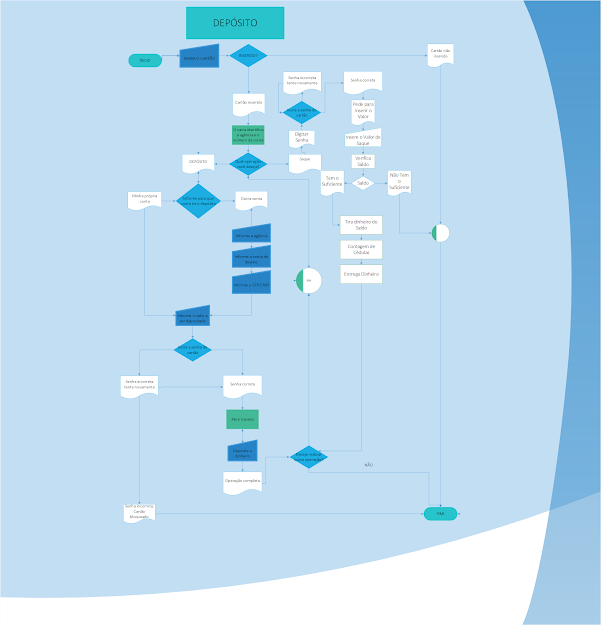

Um fluxograma é uma representação gráfica da sequência das etapas de um processo, que permite uma análise de dados, fornecendo uma visão global por onde se passa o desenvolvimento. Ele é uma ferramenta de mapeamento de processos, bastante usada em formato de diagramas que simplificam e descrevem as etapas de um processo complexo. Ele é estruturado por símbolos geométricos que simbolizam quais são os recursos envolvidos nos processos e quais são as direções a serem seguidas para que o resultado seja atingido.
